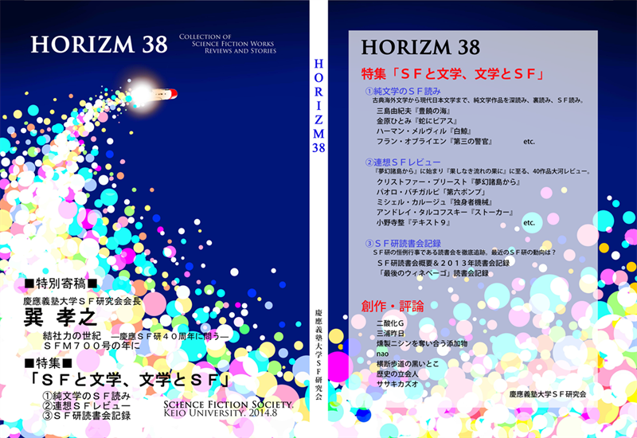
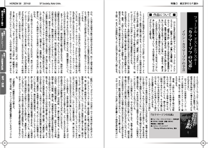
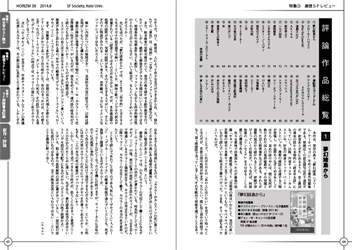
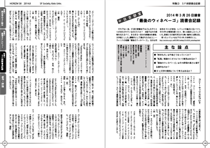

慶應義塾大学SF研究会 2014年8月刊
HORIZM 38
「HORIZM 38」は当サークルが発行する会誌「HORIZM」の38号で、前号までとはサイズを一新したA5版となっております。
現在のSF研において重要な争点となっている「SFと文学、文学とSF」をテーマとし、「今までとは全く違うHORIZM」を掲げた、
量も質も読み応えたっぷりの一冊に仕上げました。評論対象も古典作品から今年発表の新着作品まで、幅広く揃えています。

【特別寄稿】   
慶應義塾大学SF研究会会長
巽 孝之
慶應義塾大学SF研究会創立40周年によせて
結社力の世紀 ―慶應ＳＦ研40周年に問う―
『SFマガジン』700号刊行によせて
SFM700号の年に
【特集】 「SFと文学、文学とSF」
①純文学のSF読み
特集①では、文学とSFの橋渡しとなる企画、「純文学のSF読み」を掲載しています。当サークルではSF作品のみならず、
いわゆる純文学作品に関する話題も多く持ち上がる場となっており、部員たちの両ジャンルに対するこだわりを思い
思いに書き綴りました。「これっていわゆる純文学作品じゃないの？」という作品に対して、ずばりと「いやこれは
ここがSFだ！」と解釈を与えており、書かれた年代も国もバラバラな十作品に、それぞれ違うSF読みのアプローチが
為されています。
●評論作品一覧●
中古文学のSF性
三島由紀夫『豊饒の海』
大江健三郎『燃えあがる緑の木』
金原ひとみ『蛇にピアス』
阿部和重『クエーサーと13番目の柱』
ハーマン・メルヴィル『白鯨』
フョードル・ドストエフスキー『カラマーゾフの兄弟』
ジョリス＝カルル・ユイスマンス『彼方』
フラン・オブライエン『第三の警官』
マリオ・バルガス=リョサ『世界終末戦争』
②連想SFレビュー
特集②では、リレー形式でレビューを行う「連想SFレビュー」を掲載しています。
「連想SFレビュー」は、
『AKIRA』なら「超能力」つながりで『新世界より』
『新世界より』なら「ディストピア」、つながりで『一九八四年』
『一九八四年』なら「ニュー・スピーク」つながりで『虐殺器官』
……という具合に、
ある作品において印象的な要素を挙げ、同じ要素を持った他作品を選出し、
更なる他作品へ連想を繋げていくことでレビューを連ねていくという構成になっています。
誰もが知るメジャー作品から未邦訳作品までを含めた40作品に渡るレビューの集合体で、
各作品ごとにレビュー執筆者を分担した……のですが、一部の執筆者たちの偏愛的な評論、
「なんじゃそりゃ？」と思うような連想要素などにより、妙に癖のある企画となりました。
これらを全て読み終わったときに、一筋の大河のごとき流れが完成していることにご注目。
●評論作品一覧●
クリストファー・プリースト『夢幻諸島から』
カート・ヴォネガット・ジュニア『スローターハウス5』
Harry Turtledove『After the Downfall』
ぎゃろっぷ制作『遊戯王 5D's』
大友克洋『AKIRA』
A-1 Pictures制作『新世界より』
ジョージ・オーウェル『一九八四年』
伊藤計劃『虐殺器官』
コナミ制作『ときめきメモリアル』
ジャコ・ヴァン・ドルマル監督『ミスター・ノーバディ』
うえお久光『紫色のクオリア』
ニトロプラス制作『沙耶の唄』
小林泰三「C市」
ジェームズ・キャメロン監督『ターミネーター』
村上龍『五分後の世界』
パオロ・バチガルピ「第六ポンプ」
アンナ・カヴァン『氷』
ジョン・カーペンター『遊星からの物体X』
岩明均『寄生獣』
アーヴィン・カーシュナー監督『スター・ウォーズ エピソード5/帝国の逆襲』
サンライズ制作『機動戦士ガンダムF91』
サンライズ制作『アイドルマスター XENOGLOSSIA』
スタジオぴえろ制作『KEY THE METAL IDOL』
SR-12W / PIONEER LDC.制作『serial experiments lain』
J・G・バラード『クラッシュ』
マイケル・ベイ監督『トランスフォーマー』
ザック・スナイダー監督『マン・オブ・スティール』
ウィリアム・ゴールディング『蠅の王』
萩尾望都『11人いる！』
グレッグ・イーガン『万物理論』
アンドレイ・タルコフスキー監督『ストーカー』
フランツ・カフカ「流刑地にて」
ミシェル・カルージュ『独身者機械』
澁澤龍彦『高丘親王航海記』
ダグラス・アダムズ『銀河ヒッチハイク・ガイド』
小野寺整『テキスト9』
テッド・チャン「あなたの人生の物語」
吉富昭仁『BLUE DROP』
スタジオディーン制作『シムーン』
小松左京『果しなき流れの果に』
③SF研読書会記録
特集③では、部員たちの議論が交わされる「読書会」に焦点を当てた「SF研読書会記録」を掲載しています。
読書会は日吉部室にて毎週金曜日に行われている恒例行事ですが、その概要説明と、2013年度の目録をまとめました。
また、今までになかった試みとして、コニー・ウィリスの短篇「最後のウィネベーゴ」での読書会をまるまる一回分、録音、
文字起こしし、補足を加えました。個々の評論よりも自然かつ大胆に個々人の性格や思想が反映されており、普段の読書会の
様子や慶應SF研の実態が露わになっています。
<参考>「最後のウィネベーゴ」読書会に用いたレジュメ（慶應SF研のページヘ）
【創作・評論】
特集①～③に加え、本誌では部員たちによる創作作品や自由評論のコーナーも設けました。
【創作】
少女の夢をみんなに 二酸化G
パウル・ツェランのように 三浦昨日
迷妄 燻製ニシンを奪い合う添加物
【評論】
文学の外～唯野教授に寄す～ nao
筒井康隆『文学部唯野教授』をベースに、イーグルトンから伊藤計劃まで、文学の「外」は存在するのか？を探る。
「可能性感覚」序論 横断歩道の黒いとこ
膨大な量と執筆期間の末に未完に終わったローベルト・ムージル『特性のない男』。そこに秘められた「可能性感覚」とは。
大川勇『可能性感覚』を取り上げつつ、初期作品『愛の完成』を分析する。
『機動戦士ガンダム0080 ポケットの中の戦争』論考 歴史の立会人
ガンダムシリーズの中でも人気が根強い「ポケ戦」。作中での「嘘」についてから戦争映画の系譜に至るまで、徹底分析。
ノワールの記憶破壊 ササキカズオ
脚本担当の月村了衛が『機龍警察 自爆条項』により日本SF大賞を受賞し、2014年の初頭にはBD-BOX化も果たした、
2001年のテレビアニメ『ノワール』。13年の時を経て、この作品が視聴者の記憶に及ぼす作用を探る。
{kind=link}
{kind=link}
{kind=link}